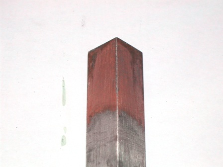
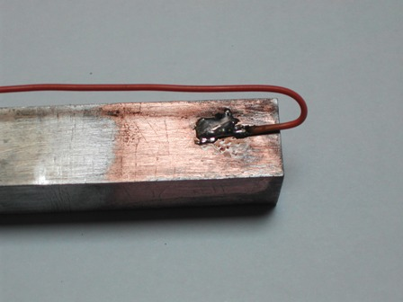
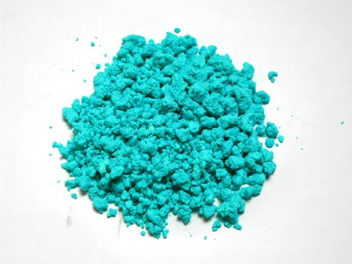

Nel mio Test di ramatura elettrolitica del ferro, concludevo che avrei provato un altro tipo di ramatura, utilizzante un sale inedito, e lo spunto per questo esperimento me lo dava ancora il "Turco" della Hoepli.
Fra le mille e mille ricette di ogni tipo, l'Autore propone la ramatura chimica dell'alluminio per mezzo del lattato di rame.
Ecco una buona occasione per preparare un pochino di questo composto e finalmente un sale di rame insolito che abbia una parvenza di utilità.
Come inciso, osservo che il rame è il metallo di elezione per i giovanisssimi chimici inorganici del web, che fornisce la possibilità di giocare con dei sali di un metallo colorati, anche se quasi sempre monotonamente monocromatici.
Il motivo dell'azzurro successo del rame è che ha il vantaggio, rispetto a tanti altri metalli di transizione che fornirebbero sali colorati, di essere reperibile, economico e facile da trattare.
Se ad una soluzione di CuSO4 si aggiunge (rispettando la stechiometria) del carbonato di sodio Na2CO3, non si ottiene il carbonato neutro, CuCO3, che non esiste, ma un precipitato di carbonato basico di rame CuCO3.Cu(OH)2 :
2 CuSO4 + 2 Na2CO3 + H2O → Cu2(OH)2CO3 + 2 Na2SO4 + CO2
che una volta lavato perfettamente e filtrato ben si presta alla preparazione di tutti gli altri sali di rame, essendo l'acido carbonico facilmente spostabile da qualsiasi acido anche non forte.
In questo modo ho preparato una soluzione di lattato di rame CH3-CH(OH)-COO-Cu-OOC-CH(OH)-CH3 salificando opportunamente il carbonato basico con l'acido lattico, CH3-CH(OH)-COOH.

Il lattato di rame è solubilissimo in acqua e per questa ramatura chimica sperimentale ne ho preparato una soluzione abbastanza concentrata (circa 200 g/l, anche se il Turco non dice quanto dovrebbe essere) leggermente acidificata con acido lattico e portata all'ebollizione.
Nel frattempo avevo predisposto un piccolo angolare di alluminio, detergendolo prima con una soluzione al 10% di NaOH fino a svolgimento di idrogeno e poi ravvivandola col rapido passaggio in una soluzione di acidi cloridrico/fluoridrico al 5%.
Regola generale in tutti questi esperimenti di deposizione è che la superficie dei metalli deve essere perfettamente linda.
Appena immerso il pezzo di alluminio nella soluzione bollente di lattato comincia ad avvenire le deposizione di un bel colore rosso e lo si lascia immerso per circa una decina di minuti, agitando sempre vigorosamente.
L'aderenza del rame sull'alluminio con questo metodo chimico direi che è molto buona e tenace, anche se lo spessore rimane molto sottile.
Una volta depositato lo strato chimico si potrebbe facilmente aumentarne lo spessore per via elettrolitica secondo il metodo classico già visto.
Purtroppo, nonostante l'impegno, non sono riuscito a avere un deposito di colore perfettamente omogeneo ma è rimasta qualche zona un po' più scura dovuta al solito motivo: la non PERFETTISSIMA pulizia del pezzo.

Evidentemente occorre decappare la superficie lasciando che la soda caustica e poi gli acidi la aggrediscano senza pietà, il metallo deve essere profondamente "al vivo"!
(La prossima volta... ghe pensi mi!)

Ho verificato la tenacità della ramatura al lattato provando a saldare a stagno un conduttore elettrico sulla superficie così ricoperta .La brasatura a stagno si può fare su molti metalli, ma sull'alluminio è assolutamente impossibile.
Con la ramatura ecco invece il filo saldato sulla barretta in maniera sicura e resistente alla trazione.
(Purtroppo la fotografia è brutta assai...)
Mi è rimasta una bella soluzione azzurro verde di lattato di rame, che ho provato a far cristallizzare, senza successo.
Il sale è troppo solubile ed anche concentrando parecchio e poi lasciando raffreddare esso non cristallizza, almeno lavorando con quantità piccole come in questo caso.
Ho allora fatto evaporare senza esagerare con la temperatura, ottenendo il cuprico lattato in granuli azzurri, lentamente ma perfettamente solubili in acqua, quindi non dovrebbe essersi idrolizzato.
La sostanza avrà un indefinito grado di idratazione, compreso tra anidro, monoidrato e diidrato (i due casi che ho trovato in letteratura), diciamo Cu(C6H10O6).nH2O con n tra 0 e 2.
